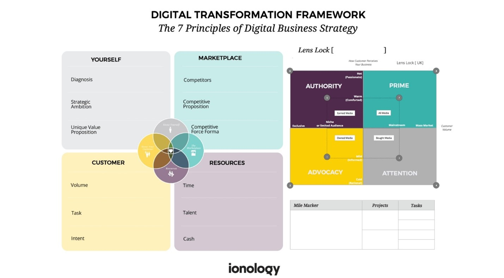
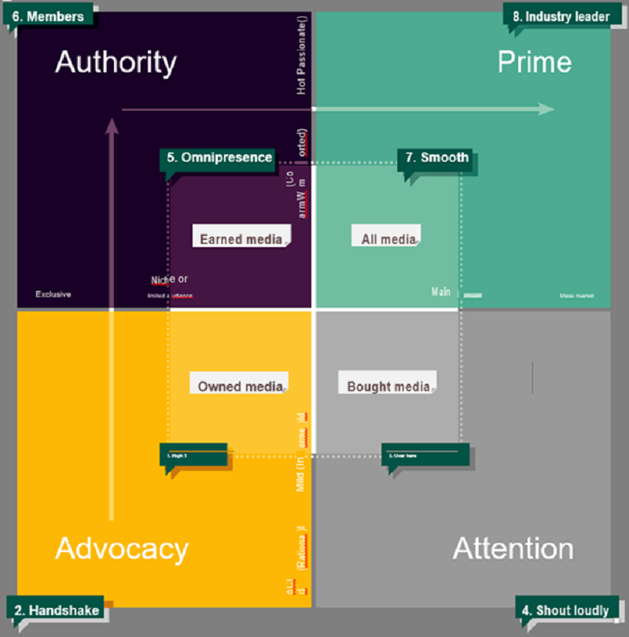
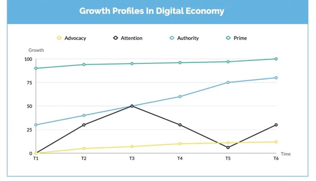

Digital Transformation Stratergy

'Digital Transformation' keyword itself carries a brief idea of what
does this means. But the real question stands do seem that simple as
it sounds. Digital Transformation has become a key topic in every
board room, from small scale to multi-national companies, and the
Covid-19 pandemic has even more encouraged the corporations towards
Digital Transformation.
What is Digital Transformation?
Digital Transformation could have a wide range of definitions due to
the complexity and broader spread in the industry. The most
reasonable explanation would be that integrating digital technology
in all business areas to make the process efficient for the
organizations and customers keeps challenging the status quo in the
company. But generally, companies tend to misunderstand this
definition and start believing that having a website, mobile app or
an e-commerce store would satisfy the requirements of a digitally
transformed business model, which is not the case. The scope of
Digital Transformation could be broadened in multiple ways.
Digital Transformation will result from a series of decisions
affecting your value proposition, your culture, how you use data,
analytics, technology and how you engage with your staff and
customers. According to Dave Chaffey's 'Digital Marketing: Strategy,
Planning and Implementation' book, there are 5D's companies that
could work on reaching and learning from the audiences by giving
them a better customer experience.
- Digital Devices – Encouraging the users to interact with the company mobile app or website through multiple devices would heavily increase the efficiency from the customer's end. They would also provide an excellent opportunity for businesses to gain valuable data by tracking user interactions.
- Digital Platforms – Other than the mobile apps and company website, the companies could reach a bigger audience through promoting the business ideas and products through highly used social media such as Facebook, Instagram, Twitter, etc. Currently, all these social media have given their own or integrated data analytic platforms for businesses to gain well-organized insights.
- Digital Media – Using different paid, owned and earned communication channels to promote the businesses and engaging the audience. This could include social media marketing, starting up YouTube channels or blogs to establish a brand, working on SEO to appear on search results and much more
- Digital Data- This could be considered as the golden opportunity companies get by digitalizing their business. Suppose the whole business was running on a conventional platform and all the advertising is done on public media like television, radio or banners. In that case, we could never gain more extensive insight into the people who viewed these. But digital media has introduced tons of analytics platforms for businesses to acquire enough data to take driven decisions.
- Digital Technology – Marketing strategies companies used to interact with the audiences, such as mobile app or company websites, email campaigns, newsletters that would be used to keep the audience in touch, would fall under this category.
Above 5D's mainly focused on how to digitalize the company marketing strategies from the customer's end. Professor Niall McKeown explains seven Digital Transformation Strategies companies could work on to make a considerable turnover in the business. He mainly breaks them down into 3 categories as Microanalysis, Macroanalysis and action. 
Micro Analysis
Micro Analysis could be described as the collection of factors close to the organization, directly impacting the business's daily performance.
Diagnosis
One of the most important components of Microanalysis is 'Knowing Yourself '. Companies need to do a qualitative analysis and understand what trends are going around in the current market and what areas we are doing well and lacking. Having a strategic ambition on driving the company towards a specific direction would narrow down the priorities and complexity of work. It's a well-known fact that the ambition of all businesses is to earn money, and this cannot be considered a strategic ambition. The companies need to step beyond that and develop innovative and creative ideas to grow beyond the core business. Going through this process would be beneficial for the companies to build a unique value around the products and services they are providing to the customers.
Customers
Microanalysis would also include understanding the customer base. From the 5D's mentioned above, we could gain very useful insights using tools such as Google Analytics, Google Trends, Google Keyword planner and much more. These tools enable us to understand the communities that have never become our customers but who would be interested in our business if we could come up with better solutions.
Market Place
According to Professor Niall, fighting in the digital economy is the same as playing a boxing battle. There are different weight classes, and it's important to fight the battles that are possible to win. Using tools such as Propulsion, we could gain insights on the position where the company stands in the digital economy and would give us a better idea of how the company could move forward with the digital economy.
Macro Analysis
Macro Analysis enables the companies to analyze and identify the potential opportunities and hazards that would impact the business. It's really important to understand where the company stands and to what position it can be driven.
Where are we & What can we be
The quadrant represents how the company could be taken to the mainstream level through different strategies. Advocacy means the customer base and businesses the company gain through the years of operation. It's more of a handshake deal where brand loyalty develops with time. But this would not take you to the hierarchical level in an expected life span. So, companies shift to paid social media marketing. Through these methods, companies gain immense attention for a short period, but that would not help them get acquisitions that would bring in expected profits. The main reason for this is that the organic customers who visit the company site would be interested in knowing who we are and the acquisitions that came through paid promotions would be interested in what they could buy from us. In most cases, the customers we gain through paid advertisements don't stay loyal to the brand longer.
Better method companies could reach Authority from Advocacy is by keeping on innovating promptly by the analytics gained through Microanalysis. So, the company would attract different customer bases with its variety of innovations and technological advancements. To reach this level, the company needs a talented leadership and a creative team than both the previous instances. Most of the corporations got to the mainstream through constant innovation along with technology.
Conclusion
Digital transformation is not just transforming the whole workplace or customer base to digital platforms. But most importantly, using digital technologies to collect data in order to make Strategic and Data-Driven decisions. According to a recent survey, 84% of global companies consider digital transformation as the key to survival in the next 5 years.
STEM link has launched a series of tech courses such as Python Programming, Frontend Development, Robotics and Photoshop courses for you to enhance your skill library.